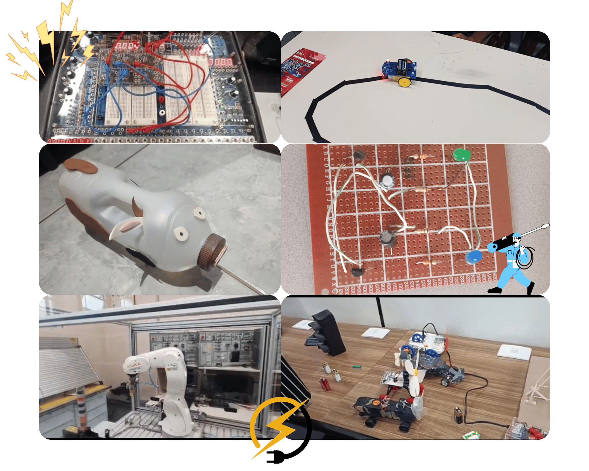

Bem vindos, bixos/bixetes de ELO!
Primeiramente, parabéns por passarem na ETESP e ainda no melhor curso DE TODOS! Aqui nós somos conhecidos como “extremamente inteligentes” e não perdemos a chance de fazer muita várzea! Se falarem que você só troca lâmpadas, não se importe, é apenas inveja de não terem passado aqui! Durante o nosso curso você aprenderá tudo sobre manutenção de dispositivos eletrônicos, automação industrial, programação e mais, com o apoio de nossos incríveis professores (a maioria calvos mas isso demonstra sabedoria!) com muitos PCs ( que servem tanto para aprender tanto para jogar nas aulas tediosas)
ELETRONICA
Tradições de ELO
ROLÊ NA SANTA
No começo do ano, para adaptar e fazer com que os bixos, vermes e veteranos se conheçam melhor, os vermes e veteranos levam os bixos a pé da etesp pra a Santa Efigênia pra conhecer e possivelmente comprar componentes e materiais eletrônicos que eles vão precisar no curso, entre eles, os básicos (LEDs, resistores, capacitores, estanho, ferro de solda, etc.) e outros até mais específicos dependendo do projeto/circuito, como rodas para a corrida de carrinhos, por exemplo. É sempre bom que a gente ensine os bixos a irem para um lugar desses por perto, pros muitos componentes queimados e circuitos com problema que virão!
Fazer o quadro de energia cair⚡
Brincadeiras à parte, parece que isso já se tornou uma tradição, já que sempre acontece kkkkk, principalmente no laboratório do Kaiser (21M) no 2° ano, então se liga que a hora de vcs vai chegar kkkkkk
Atelieelo
A maior oficina da ETESP! Nós de elo nos juntamos para criar projetos e ensinar pessoas como que a eletrônica funciona, ajudando elas a soldarem, acender LEDs etc. Ela sempre ocorre no final do ano, na semana da primavera e sempre é muito divertido se juntar e ver a reações de outros cursos experienciando como é serem os MELHORES por 1 dia.
Projetos de ELO
Professores de ELO
Se você tem pesadelo e tem medo de sofrer com a calvície, não vem pro nosso curso não KKKKKKKKKK que aqui o que mais tem é professor calvo, mas tbm n da pra culpar eles né
Kaiser

Não existe professor mais TRANQUILO que ele, sérião! O mundo pode estar caindo, e ele: "Calma, calma, calma". O cara é gente boa, passa muito projeto no 1° ano que é muito importante pra se habituar com o curso na prática, e nos outros foca um pouco mais em projetos digitais no tinkercad e TCC, no 3°. Ah, e o horário dele é tão previsível quanto o humor da X KKKKKKKK, as vezes ele simplesmente NÃO vem e não avisa
OBS: *NÃO PERGUNTEM SOBRE O DIA DO HOMEM E A ANGOLA* ah, e um dia vocês vão marcar as frases icônicas dele e do Vitorino, vocês descobrirão...
Camilla
É descontraída, de boa com a vida, tem as suas piadocas (mds, se vc rir delas...), ela tem dinâmica de aula, falando sobre segurança do trabalho de uma forma bem lúdica e diferente, usando teoria e prática (vai ter projeto na aula dela). Adora um café, parece o Cellbit kkkkkkk (não temos fotos dela)
Vitorino

LEIAM CITAÇÕES DA ALMA, um livro dele, para entender a profundidade do que ele fala nas aulas KKKKKKKKK brincadeiras à parte, no 1° ano, ele vai focar bastante em teoria de eletricidade residencial e vocês fazer uma planta de uma casa qualquer! (pode ser a sua também) No 2° ano, o Vitorino foca em trabalhar com dispositivos semicondutores e passar bastante projetos práticos sobre! vai ter também a famosa corrida de carrinhos, que é um p*** evento da escola!
OBS: ele tem um canal gamer no yt ta? KKKKKKKKK brinks, ah é, igual o kaiser, prestem atenção nos bordões dele tbm...
Renivaldo

Ele é o senhor do CTRL C CTRL V kkkkkkkk brincadeira, o homem tem conhecimento, mas pra que ele sobreviva às aulas, ele precisa do pdfzinho dele... vocês vão apresentar e fazer uns projetos em tinkercad na aula dele pacas
Walter

Pros professores anteriores, talvez nem precisa estudar pras provas, até porque alguns nem passam provas, mas pro Walter... estudem. Lei de Kirchoff, Diodos, etc. Tudo isso vai requisitar um tempo de estudo de vocês se vocês não quiserem ficar de rec, ah, e não estressem ele muito e não atrasem na aula dele... pelo bem de vocês... de verdade... kkkkkkkkkkkkkkk
Menção Honrosa: Alex

Vocês não vão ter a chance de conhecer, mas ele era o cara! que professor bom, explicava de tudo um pouco e um pouco mais! infelizmente se aposentou no meio do ano passado, deixando pra trás nós, os vets de agora, desamparados... Ele sempre estará em nossos corações!
Elô no interclasse